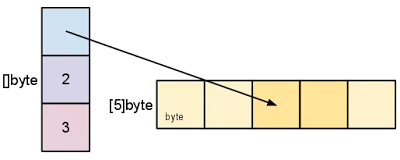
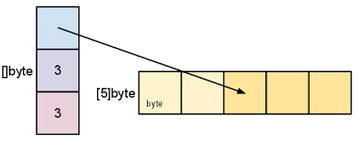
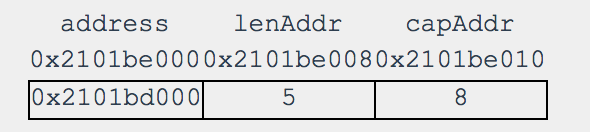

Golang的初学者有时会被slice所困扰，不理解其内部原理，使用起来总是担心是否有复制的开销。 本文翻译自Understanding Slices in Go Programming，作者对其内部原理作了深入分析。相信读完将会有不一样的感受。
因为我常常被Go语言中Slices(切片)的概念和使用所困扰，它像数组，但又不仅仅是数组。我阅读了很多有关Slices的文章，现在我认为是时候谈谈我对Slices的理解了。
这里有一篇Andrew Gerrand所写的关于切片的文章。因为这里没必要重复Andrew所讲过的内容，所以阅读下面的文章之前，请先阅读下他的文章。
下面让我们直接看看切片的内部结构吧：

上面的图片展示了一个slice的内部结构。当你创建一个切片时，那么该切片的数据以及所隐含的数组也同样被创建了。你创建的切片变量的值将会是这个数据结构，且当你将切片传递给一个函数时，将会在函数栈中创建这个数据结构的拷贝。
我们有两种方式来创建一个切片：
这里我们通过make关键字创建了一个切片，并且将切片中存储的数据类型、切片初始化的长度、隐含数组的容量都当做参数传递给了make。
mySlice := make([]string, 5, 8)
mySlice[0] = "Apple"
mySlice[1] = "Orange"
mySlice[2] = "Banana"
mySlice[3] = "Grape"
mySlice[4] = "Plum"
// You don’t need to include the capacity. Length and Capacity will be the same
mySlice := make([]string, 5)
我们也能够通过逐个元素来创建切片。这种情况下，切片的长度和容量是相同的。需要注意这里在[]中没有具体的数。如果你添加了，那将会变成数组了。不添加，则创建的是切片：
mySlice := []string{"Apple", "Orange", "Banana", "Grape", "Plum"}
一旦切片创建了，我们就不能扩展它的容量了。唯一改变切片容量的方式是创建一个新的切片，然后执行拷贝操作。Andrew在文章中提到了一个简单函数来检测切片的剩余容量。
切片的长度表示的是隐含数组中，从起始索引开始的实际元素的个数； 切片的容量表示我们能够利用的元素个数。
我们能够从原始切片中创建一个新的切片：
newSlice := mySlice[2:4]

新切片指针变量的值关联了原来隐含数组的索引位置2和3。对于新的切片而言，我们现在有包含3个元素的隐含数组，我们仅仅用了其中的两个。这里新切片对隐含数组中的前两个位置的元素是不知道的，并且永远也不会用到。
当执行切片操作时，第一个元素指定了从切片指针变量位置开始的索引。在上面的例子中，我们说从第二个索引（对应隐含数组中的第3个元素）开始取切片元素。第二个参数是最后索引位置+1的值，我们说新的切片结束位置索引号为3。
当然，我们在执行切片操作是，不需要经常指定起始或者结束位置：
newSlice2 = newSlice[:cap(newSlice)]

在这个示例中，我们利用newSlice创建了第三个新的切片。我们没有指定起始的索引，但是指定了结束索引的位置。newSlice2与newSlice比较，有相同的起始位置，以及容量，但是长度却发生了变化。通过将newSlice的容量大小作为newSlice2的结束索引，那么newSlice2将使用隐含数组的所有剩余的元素。
下面我们来运行一段程序，来证明这种数据结构的确是存在的，并且切片也是按照我们所预想的运行的。下面的程序通过观测内存地址，来观测切片：
func InspectSlice(slice []string) {
// Capture the address to the slice structure
address := unsafe.Pointer(&slice)
// Capture the address where the length and cap size is stored
lenAddr := uintptr(address) + uintptr(8)
capAddr := uintptr(address) + uintptr(16)
// Create pointers to the length and cap size
lenPtr := (*int)(unsafe.Pointer(lenAddr))
capPtr := (*int)(unsafe.Pointer(capAddr))
// Create a pointer to the underlying array
addPtr := (*[8]string)(unsafe.Pointer(*(*uintptr)(address)))
fmt.Printf("Slice Addr[%p] Len Addr[0x%x] Cap Addr[0x%x]\n",
address,
lenAddr,
capAddr)
fmt.Printf("Slice Length[%d] Cap[%d]\n",
*lenPtr,
*capPtr)
for index := 0; index < *lenPtr; index++ {
fmt.Printf("[%d] %p %s\n",
index,
&(*addPtr)[index],
(*addPtr)[index])
}
fmt.Printf("\n\n")
}
函数InspectSlice进行了一系列的指针操作，以便我们能够看到切片的数据结构和隐含数组的内存和值的信息。
后续我们将会一一拆分讲解，第一步，我们先来创建一个切片，然后通过InspectSlice函数运行它：
package main
import (
"fmt"
"unsafe"
)
func main() {
orgSlice := make([]string, 5, 8)
orgSlice[0] = "Apple"
orgSlice[1] = "Orange"
orgSlice[2] = "Banana"
orgSlice[3] = "Grape"
orgSlice[4] = "Plum"
InspectSlice(orgSlice)
}
下面是程序的输出：
Slice Addr[0x2101be000] Len Addr[0x2101be008] Cap Addr[0x2101be010]
Slice Length[5] Cap[8]
[0] 0x2101bd000 Apple
[1] 0x2101bd010 Orange
[2] 0x2101bd020 Banana
[3] 0x2101bd030 Grape
[4] 0x2101bd040 Plum
InspectSlice函数，首先打印了前篇数据结构的地址，以及长度值、容量值所在的地址。然后通过根据这些地址创建的int类型指针，打印出长度和容量的值。最后我们创建了一个指向隐含数组的指针。通过这个指针，我们遍历这个隐含数组，打印出索引值、每个元素的起始地址、以及每个元素的值。
让我们将InspectSlice函数拆分，逐个讲解它是如何工作的：
// Capture the address to the slice structure
address := unsafe.Pointer(&slice)
// Capture the address where the length and cap size is stored
lenAddr := uintptr(address) + uintptr(8)
capAddr := uintptr(address) + uintptr(16)
unsafe.Pointer是一个特殊的类型，它能够映射到uintptr类型。因为我们需要执行指针运算，我们需要得到真实的指针。代码段第一行将切片数据结构的地址强制转换成了unsafe.Pointer，然后我们创建了两个普通指针，它们对数据结构地址分别进行了加8和加16的操作(注意：这里具体跟操作系统版本有关，32位系统分别加4加8)。
下面的图展示了每个指针变量，指针指向地址的值：

我们通过这些指针，能够转换成指定类型的指针，就能够显示指向的值了。这里我们创建了两个整型指针，以便于显示切片数据结构中的长度和容量的值。
// Create pointers to the length and cap size
lenPtr := (*int)(unsafe.Pointer(lenAddr))
capPtr := (*int)(unsafe.Pointer(capAddr))
We now need a pointer of type [8]string, which is the type of underlying array.
现在我们需要获取[8]string类型的指针，这也是隐含数组的类型：
// Create a pointer to the underlying array
addPtr := (*[8]string)(unsafe.Pointer(*(*uintptr)(address)))
这条语句中有很多的细节，我们拆分开来解析：
(*uintptr)(address) : 0x2101be000
这条语句表示获取切片数据结构的起始地址，然后强转成普通的指针。
* (*uintptr)(address) : 0x2101bd000
然后我们就能够通过普通的指针获取到其中的值，这个值也就是指向隐含数组的起始地址值
unsafe.Pointer(*(*uintptr)(address))
然后我们将隐含数组起始地址的值转换成unsafe.Pointer类型，因为我们需要unsafe.Pointer类型指针做最终的转换。
(*[8]string)(unsafe.Pointer(*(*uintptr)(address)))
最终，我们将unsafe.Pointer类型转换成合适的指针类型([8]string类型)
剩下的代码片段，通过合适的指针来显示数组中的值：
fmt.Printf("Slice Addr[%p] Len Addr[0x%x] Cap Addr[0x%x]\n",
address,
lenAddr,
capAddr)
fmt.Printf("Slice Length[%d] Cap[%d]\n",
*lenPtr,
*capPtr)
for index := 0; index < *lenPtr; index++ {
fmt.Printf("[%d] %p %s\n",
index,
&(*addPtr)[index],
(*addPtr)[index])
}
下面，让我们将整个程序放在一起，创建很多个切片。我们将观察创建的每个切片以确保我们所知道的这些知识是正确的：
package main
import (
"fmt"
"unsafe"
)
func main() {
orgSlice := make([]string, 5, 8)
orgSlice[0] = "Apple"
orgSlice[1] = "Orange"
orgSlice[2] = "Banana"
orgSlice[3] = "Grape"
orgSlice[4] = "Plum"
InspectSlice(orgSlice)
slice2 := orgSlice[2:4]
InspectSlice(slice2)
slice3 := slice2[1:cap(slice2)]
InspectSlice(slice3)
slice3[0] = "CHANGED"
InspectSlice(slice3)
InspectSlice(slice2)
}
下面是每个切片的输出结果，这里我们创建了一个长度为5、容量为8的切片：
Code:
orgSlice := make([]string, 5, 8)
orgSlice[0] = "Apple"
orgSlice[1] = "Orange"
orgSlice[2] = "Banana"
orgSlice[3] = "Grape"
orgSlice[4] = "Plum"
Output:
Slice Addr[0x2101be000] Len Addr[0x2101be008] Cap Addr[0x2101be010]
Slice Length[5] Cap[8]
[0] 0x2101bd000 Apple
[1] 0x2101bd010 Orange
[2] 0x2101bd020 Banana
[3] 0x2101bd030 Grape
[4] 0x2101bd040 Plum
输出结果正如我们所预期的那样。然后我们创建了变量slice2，它包含两个元素，索引分别为2和3：
Code:
slice2 := orgSlice[2:4]
InspectSlice(slice2)
Output:
Slice Addr[0x2101be060] Len Addr[0x2101be068] Cap Addr[0x2101be070]
Slice Length[2] Cap[6]
[0] 0x2101bd020 Banana
[1] 0x2101bd030 Grape
从对slice2的输出中，我们看到它的长度和容量分别是2和6.因为该切片的起始位置对应，是orgSlice的隐含数组中的第三个元素，索引只能够容纳下6个元素。slice2的索引0对应orgSlice的索引2.
下面我们新建一个切片，起始位置为1，结束位置为slice2的最后一个元素位置：
Code:
slice3 := slice2[1:cap(slice2)]
InspectSlice(slice3)
Output:
Slice Addr[0x2101be0a0] Len Addr[0x2101be0a8] Cap Addr[0x2101be0b0]
Slice Length[5] Cap[5]
[0] 0x2101bd030 Grape
[1] 0x2101bd040 Plum
[2] 0x2101bd050
[3] 0x2101bd060
[4] 0x2101bd070
正如我们所期望的，slice3的长度和容量斗是。当你打印这个切片的所有值，你会发现最后三个元素没有值。因为当隐含数组被创建时，已经初始化了其中的所有值。你会看到slice3的索引0对应slice2的索引1，对应orgSlice的索引3，他们的指针都是0x2101bd030。
最后一段代码改变了slice3中的第一个元素，即索引为0的值。然后我们看改变后slice3和slice2值的变化：
slice3[0] = "CHANGED"
InspectSlice(slice3)
InspectSlice(slice2)
Slice Addr[0x2101be0e0] Len Addr[0x2101be0e8] Cap Addr[0x2101be0f0]
Slice Length[5] Cap[5]
[0] 0x2101bd030 CHANGED
[1] 0x2101bd040 Plum
[2] 0x2101bd050
[3] 0x2101bd060
[4] 0x2101bd070
Slice Addr[0x2101be120] Len Addr[0x2101be128] Cap Addr[0x2101be130]
Slice Length[2] Cap[6]
[0] 0x2101bd020 Banana
[1] 0x2101bd030 CHANGED
我们看到两个切片在它们各种的索引上的值都发生了变化。这证明了所有切片都使用相同的隐含数组。
InspectSlice函数证明了：每个切片都包含它们各自的数据结构（包含指向隐含数组的指针，切片的长度值，容量值）。花些时间创建更多的切片，然后利用InspectSlice函数来证明你的假设吧！